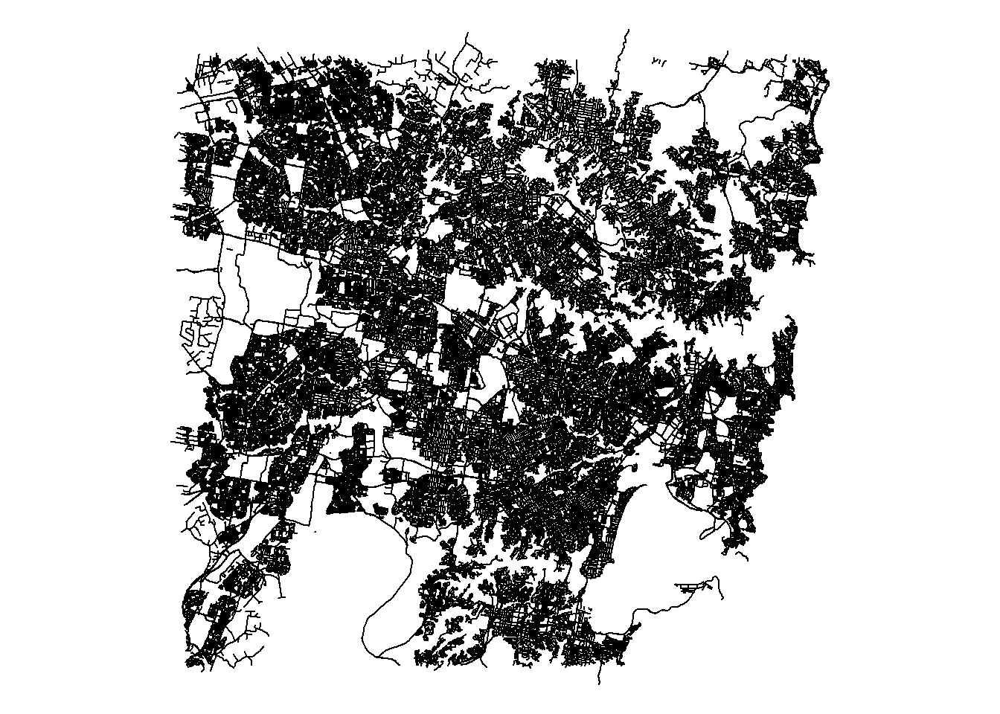
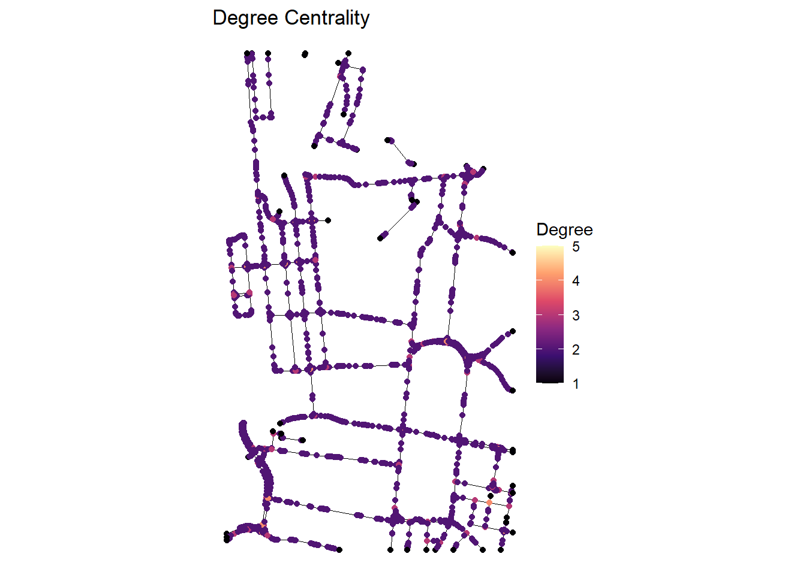
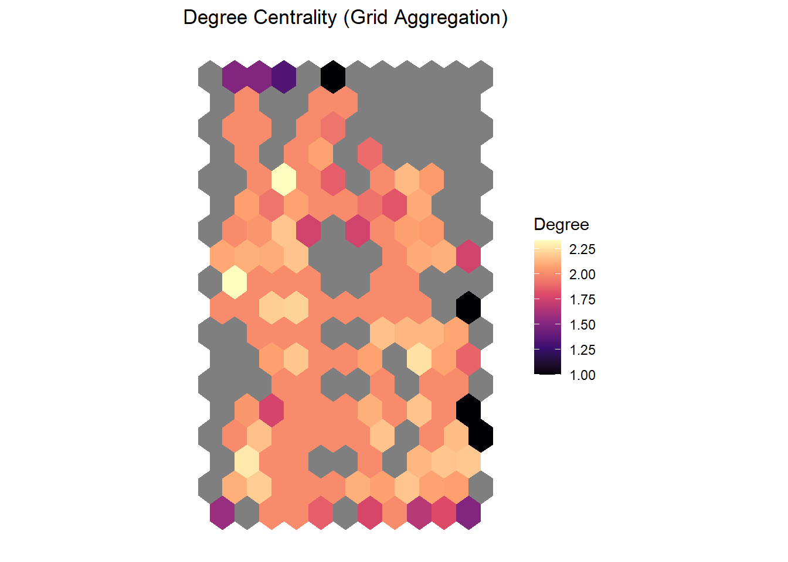

Code
library(osmdata)
library(sf)
library(dplyr)
library(ggplot2)
library(tidyverse)
library(osmextract)Spatial data is data that is associated with a geometry. This geometry can be a point, a line, a polygon, or a grid.
Spatial data can be represented in many ways, such as vector data and raster data.
We will use the sf package to work with vector data, and the dplyr package to manipulate data.
The sf package is a powerful package for working with spatial data in R.
It includes hundreds of functions to deal with spatial data.
In this chapter we will learn how to extract and merge OpenStreetMap data of amenities and road network to the pedestrian count data.
Check the available features and tags through the following link.
library(osmdata)
library(sf)
library(dplyr)
library(ggplot2)
library(tidyverse)
library(osmextract)Note: We are going to use two packages to deal with OpenStreetMap data.
location <- "Sydney, Australia"library(osmdata) Data (c) OpenStreetMap contributors, ODbL 1.0. https://www.openstreetmap.org/copyrightamenities_query <- opq(location) |>
add_osm_feature(key = "amenity", value = c("restaurant", "bank", "bar")) Note: We will use only three categories for simplicity of the example. Ideally, more types of amenities should be considered for analysis.
# Set an alternative Overpass server (makes the process quicker)
set_overpass_url("https://overpass-api.de/api/interpreter")
amenities_data <- osmdata_sf(amenities_query)
amenities_data_points <- amenities_data$osm_points View(amenities_data_points)amenities_data_treated <- amenities_data_points |>
dplyr::select("osm_id","name","amenity","geometry") unique(amenities_data_treated$amenity)[1] "restaurant" "bank" "bar" NA "loading_dock"library(sf)Linking to GEOS 3.14.1, GDAL 3.12.1, PROJ 9.7.1; sf_use_s2() is TRUEamenities_data_treated <- st_as_sf(amenities_data_treated) |>
dplyr::filter(!is.na(amenity), amenity != "loading_dock")library(osmextract)Data (c) OpenStreetMap contributors, ODbL 1.0. https://www.openstreetmap.org/copyright.
Check the package website, https://docs.ropensci.org/osmextract/, for more details.OSM_Sydney = oe_get_network(place = "Sydney") No exact match found for place = Sydney and provider = geofabrik. Best match is Surrey.
Checking the other providers.An exact string match was found using provider = bbbike.The chosen file was already detected in the download directory. Skip downloading.Starting with the vectortranslate operations on the input file!0...10...20...30...40...50...60...70...80...90...100 - done.Finished the vectortranslate operations on the input file!Reading layer `lines' from data source
`C:\Users\Gabriel's\AppData\Roaming\R\data\R\osmextract\bbbike_Sydney.gpkg'
using driver `GPKG'
Simple feature collection with 167073 features and 13 fields
Geometry type: LINESTRING
Dimension: XY
Bounding box: xmin: 150.8055 ymin: -34.07097 xmax: 151.3129 ymax: -33.66077
Geodetic CRS: WGS 84par(mar = rep(0.1, 4))
plot(sf::st_geometry(OSM_Sydney))
table(is.na(OSM_Sydney$highway))
FALSE
167073 unique(OSM_Sydney$highway) [1] "residential" "tertiary" "secondary" "primary"
[5] "service" "unclassified" "tertiary_link" "pedestrian"
[9] "footway" "cycleway" "trunk" "path"
[13] "living_street" "primary_link" "secondary_link" "busway"
[17] "motorway" "trunk_link" "motorway_link" "track"
[21] "bridleway" "services" "rest_area" "escape"
[25] "street_lamp" "emergency_bay" "driveway" Sydney_main_roads = OSM_Sydney |>
dplyr::filter(highway %in% c("motorway", "motorway_link", "primary", "primary_link", "secondary","secondary_link", "trunk", "trunk_link","tertiary", "residential")) Try adding the “tertiary”, “residential” streets, and the network gets more complex.
Note: In order to check what are the main categories in OSM, check the link
Remove variables that are not useful
Check the order of the variables
names(OSM_Sydney)Sydney_main_roads <- Sydney_main_roads[,-c(4:12)]par(mar = rep(0.1, 4))
plot(sf::st_geometry(Sydney_main_roads))
library(ggplot2)
ggplot() +
geom_sf(data = Sydney_main_roads, color = "black", size = 0.4) +
geom_sf(data = amenities_data_treated, aes(color = amenity), size = 1) +
theme_minimal() +
labs(title = "Amenities in Sydney", color = "Amenity Type") +
theme(legend.position = "bottom")
pedestrian_data <- read.csv("pedestrian_1.csv")# Define bounding box around the 4 pedestrian counters with buffer in order to simpify the process
bbox_cbd <- st_bbox(c(
xmin = 151.2016, ymin = -33.8780,
xmax = 151.2151, ymax = -33.8585
), crs = st_crs(4326))
cbd_polygon <- st_as_sfc(bbox_cbd)Note: Ideally, it would be better to run for the whole network of Sydney to compute the centrality measures. However, this requires some computational power. For the sake of the example, we will simplify the process. The aim of this chapter is to teach how to combine different datasets and extract meaningful, rather than producing excellent results.
To prevent computational lag and calculate local CBD movement flow accurately, we crop the street network to our CBD bounding box and build the topology correctly. We then compute the degree, betweenness, and closeness centrality for the street intersections (nodes).
# # Crop the road network to the study area
osm_cbd <- st_intersection(Sydney_main_roads, cbd_polygon)Warning: attribute variables are assumed to be spatially constant throughout
all geometrieslibrary(dplyr)
Attaching package: 'dplyr'The following objects are masked from 'package:stats':
filter, lagThe following objects are masked from 'package:base':
intersect, setdiff, setequal, union# Extract coordinates and build the graph topology
coords <- st_coordinates(osm_cbd) #Sydney_main_roads
edges <- coords |>
as.data.frame() |>
mutate(
X = round(X, 7),
Y = round(Y, 7)
) |>
group_by(L1) |>
mutate(
next_x = lead(X),
next_y = lead(Y)
) |>
filter(!is.na(next_x)) |>
ungroup() |>
transmute(
from = paste(X, Y, sep = ","),
to = paste(next_x, next_y, sep = ",")
)library(igraph)
Attaching package: 'igraph'The following objects are masked from 'package:dplyr':
as_data_frame, groups, unionThe following objects are masked from 'package:stats':
decompose, spectrumThe following object is masked from 'package:base':
uniong <- graph_from_data_frame(edges, directed = FALSE) |> simplify()deg <- degree(g)
bet <- betweenness(g, normalized = TRUE)
clo <- closeness(g, normalized = TRUE) node_names <- V(g)$name
node_coords <- do.call(rbind, lapply(strsplit(node_names, ","), as.numeric))
nodes_df <- data.frame(
node = node_names,
X = node_coords[,1],
Y = node_coords[,2],
degree = deg,
betweenness = bet,
closeness = clo
)
nodes_sf <- st_as_sf(nodes_df, coords = c("X", "Y"), crs = 4326)library(ggplot2)
ggplot() +
geom_sf(data = osm_cbd, color = "black", size = 0.3) +
geom_sf(data = nodes_sf, aes(color = degree)) +
scale_color_viridis_c(option = "magma") +
theme_minimal() +
theme_void() +
labs(
title = "Degree Centrality",
color = "Degree"
)
Try plotting the other maps! :)
Finally, we join the pedestrian counts, amenities by category, and average centrality values into the 200x200 grid.
grid <- st_make_grid(cbd_polygon, n = c(10, 10), square = FALSE)# 10 columns and 10 rows/ total grid cells = 10 × 10 = 100 cells
grid_sf <- st_sf(grid_id = 1:length(grid), geometry = grid)Note: We are creating grids only inside the CBD. If you do not project to EPSG the ‘cellsize’ unit will be degree instead of meters.
node_join <- st_join(nodes_sf, grid_sf) |>
as.data.frame() |>
group_by(grid_id) |>
summarize(
mean_degree = mean(degree, na.rm = TRUE),
mean_betweenness = mean(betweenness, na.rm = TRUE),
mean_closeness = mean(closeness, na.rm = TRUE),
.groups = "drop"
)amenity_join <- st_join(amenities_data_treated, grid_sf) |>
as.data.frame() |>
group_by(grid_id) |>
summarize(
amenities_total = sum(amenity %in% c("restaurant", "bar", "bank")),
amenities_restaurant = sum(amenity == "restaurant", na.rm = TRUE),
amenities_cafe = sum(amenity == "cafe", na.rm = TRUE),
amenities_bank = sum(amenity == "bank", na.rm = TRUE),
.groups = "drop"
)ped_sensors <- pedestrian_data |>
group_by(Location_code, Latitude, Longitude) |>
summarize(
total_pedestrians = sum(TotalCount, na.rm = TRUE),
.groups = "drop"
)
ped_sensors_sf <- st_as_sf(ped_sensors, coords = c("Longitude", "Latitude"), crs = 4326)
ped_join <- st_join(ped_sensors_sf, grid_sf) |>
as.data.frame() |>
group_by(grid_id) |>
summarize(
pedestrians = sum(total_pedestrians, na.rm = TRUE),
.groups = "drop"
)Note: We are only considering the total number of pedestrians per counter. Try getting other important information: i) total nº pedestrians per hour/day/season, ii) total nº pedestrians during weekdays and weekends, iii) total nº pedestrians before and after the pandemic, etc..
final_grid <- grid_sf |>
left_join(node_join, by = "grid_id") |>
left_join(amenity_join, by = "grid_id") |>
left_join(ped_join, by = "grid_id")We write the grid to a GeoJSON file for use in other mapping applications or subsequent steps.
# Save the grid as a GeoJSON file
st_write(final_grid, "grid_joined.geojson", delete_dsn = TRUE)library(ggplot2)
ggplot(final_grid) +
geom_sf(aes(fill = mean_degree), color = NA) +
scale_fill_viridis_c(option = "magma") +
theme_minimal() +
theme(
axis.text = element_blank(),
axis.ticks = element_blank(),
panel.grid = element_blank()
) +
labs(
title = "Degree Centrality (Grid Aggregation)",
fill = "Degree"
)
Now you have all the data combined! Explore other analysis and check also the inconsistencies of this dataset.